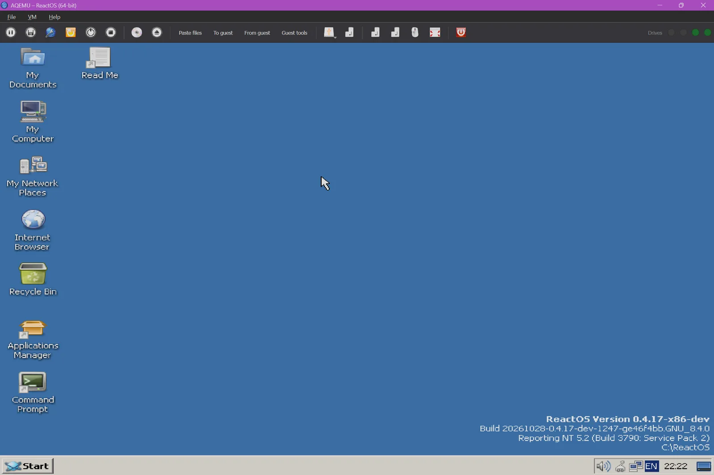
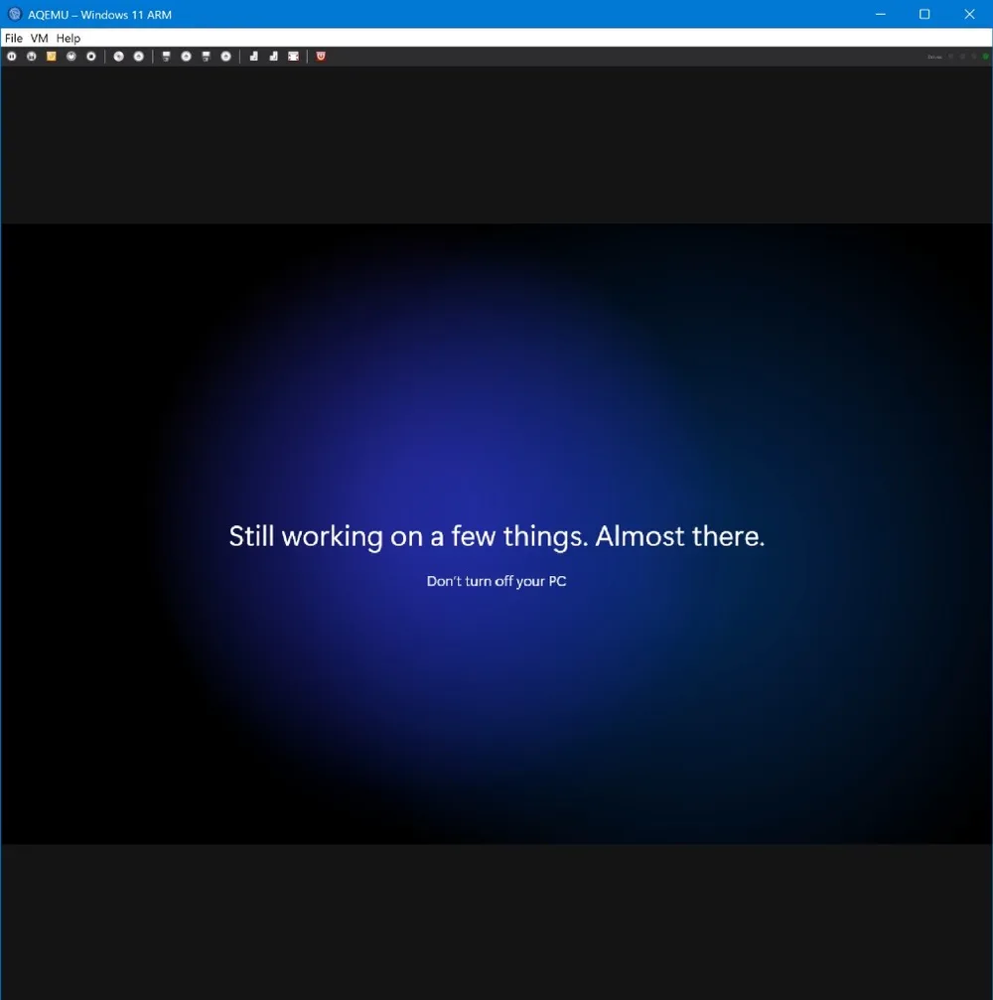
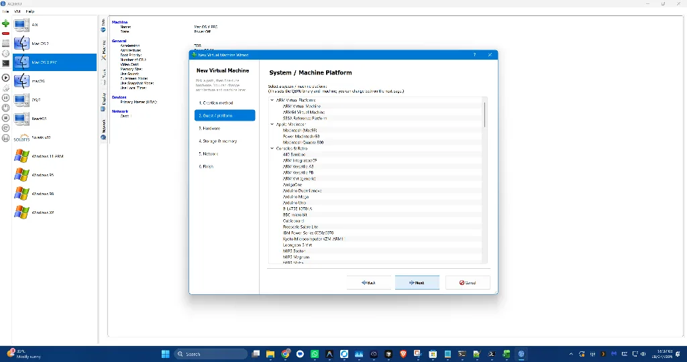
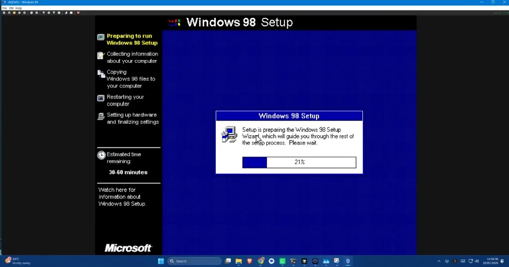
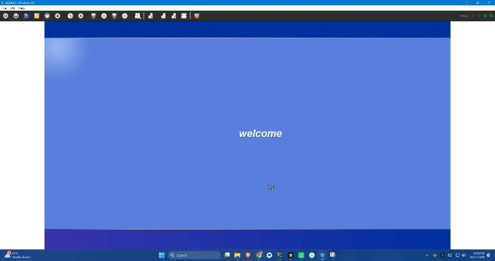

The QEMU GUI for Windows, with native ARM64 acceleration
Create, run and snapshot QEMU virtual machines from a clean Qt interface. No long command lines. Hardware-accelerated ARM64 guests on Snapdragon and other Windows on Arm PCs.
7-day trial on the Microsoft Store, then a one-time £12.99. No subscription. Source code is GPLv2.

Everything QEMU can do, without the command line
AQEMU builds the QEMU command for you, starts the guest in an embedded display and keeps the controls one click away.
Native ARM64 on Windows on Arm
ARM64 guests run with WHPX hardware acceleration on Windows on Arm PCs such as Snapdragon X laptops. Needs Windows 11 24H2, build 26100.3915 or newer.
x64 Windows too
Runs on regular Intel and AMD Windows PCs, with WHPX acceleration for x86 guests and TCG for everything else.
Snapshots and qcow2 overlays
Take a snapshot before you experiment. AQEMU creates a qcow2 overlay, and the Chain Studio shows, rebases or commits the backing chain.
Drag-and-drop file copy
Drop files on the guest window or use Paste files. To guest and From guest copy single files both ways through qemu-guest-agent.
Qt GUI, no long QEMU commands
A step-by-step New VM wizard with guest profiles sets machine, CPU, memory, disk, network and display for you.
ReactOS and classic OSes
Boot ReactOS, Windows 98, Windows XP, Linux, BSD and other classic systems, with QEMU bundled in the app.
Local crash reporting
If AQEMU crashes it writes a local report (a minidump on Windows) and offers to open it on the next launch. Nothing is uploaded.
Automatic updates
The Microsoft Store keeps AQEMU up to date without touching your virtual machines, disks or settings.
Open source, GPLv2
The full source is on GitHub. Buying on the Store pays for development and gets you the signed, auto-updating build.
Stop typing this
An ARM64 virtual machine with WHPX on Windows on Arm normally means a command like the one on the right, plus firmware paths, disks and network flags. In AQEMU you pick a profile in the wizard and press Start.
Read the 1.6 guide →Screenshots
Real captures from AQEMU on Windows.




Pricing
Pay once. Try it for 7 days first.
Microsoft Store
- 7-day trial before you pay
- Signed package with automatic updates
- Windows x64 and Windows on Arm
- Bundled QEMU, firmware and tools
- No subscription
Prices in other countries are set by the Microsoft Store in local currency.
Source code
- The full source is public on GitHub
- Build it yourself on Windows or Linux
- Bug reports and pull requests welcome
FAQ
Short answers. The docs have the long ones.
Which Windows do I need for ARM64 acceleration?
A Windows on Arm PC running Windows 11 24H2, build 26100.3915 or newer, with the Windows Hypervisor Platform feature turned on. On older builds, ARM64 guests still run with QEMU's software emulation (TCG), just more slowly.
Does it work on regular Intel and AMD PCs?
Yes. The Store build supports Windows x64 as well as Windows on Arm. x86 guests can use WHPX acceleration, and other architectures run under TCG.
Do I need to install QEMU separately?
No. The Store build ships QEMU, firmware and tools beside the app. You can point AQEMU at your own QEMU folder if you prefer.
How do I copy files into and out of a guest?
Drop files on the guest window or click Paste files and AQEMU hands them to the guest as a floppy or USB drive, with no guest software needed. To guest and From guest copy one file by path using qemu-guest-agent. See Copy and paste.
How do snapshots work?
VM → Manage Snapshots creates a qcow2 overlay and points the disk at it, or takes an internal snapshot over QMP while the VM runs. See the 1.6 Lab guide.
Does AQEMU include operating systems?
No. You bring your own installation media and licences. AQEMU provides the virtual machine manager and QEMU.
Is there a trial?
Yes, 7 days through the Microsoft Store. After that it is a one-time £12.99 purchase in the UK, with local pricing elsewhere.
The source is GPLv2. Why pay on the Store?
The Store build is signed, bundles everything and updates itself, and buying it funds development. You are always welcome to build from source instead.
Where do I report bugs?
On GitHub Issues. Help → Copy setup for a GitHub issue puts your version, host and QEMU path on the clipboard.
Documentation
Docs home
Start here: every guide and reference doc in one place.
User guide
First start, the main window, the New Virtual Machine Wizard and the settings tabs.
Windows 11 guide
Windows 11 on ARM and x86, TPM and UEFI, plus Windows 9x, XP and 7.
OS catalog
Linux, BSD, Raspberry Pi, RISC-V, POWER, SPARC, DOS, OS/2 and the built-in templates.
QEMU Lab 1.6
Menus, storage, snapshots, networking and acceleration.
Copy and paste
Text, Paste files, To guest and From guest.
New VM wizard
How the creation paths fit together.
Changelog
What changed in each release.
Privacy
What AQEMU stores and what it never sends.